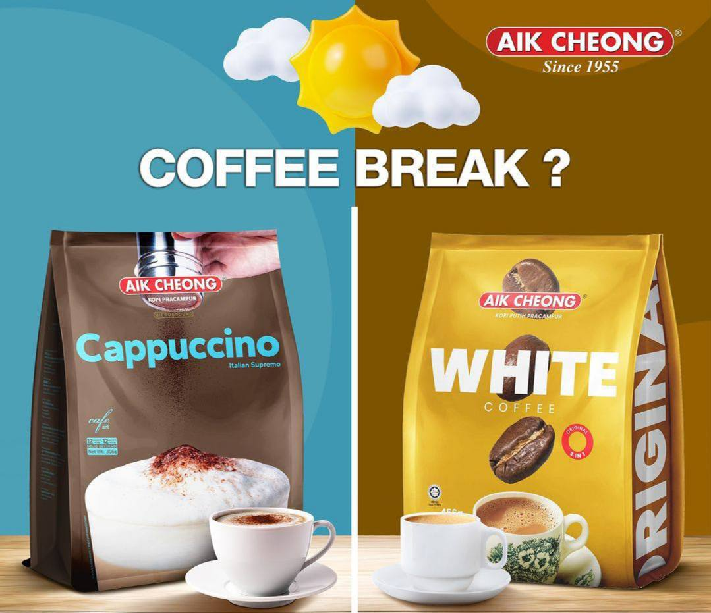

To be more specific, 2 years before Malaya's independence, in August 1957, the humble beginnings of Aik Cheong Coffee Roaster Sdn. Bhd. took form. The coffee bean commerce was developed in the rustic and charming settings of a little wooden store on Temple Street in ancient Melaka Town. The early priority were to import coffee beans from Indonesia, the Philippines, and South America, followed by hand grinding, roasting, and packing for local market use.
10 years later, the company moved to a slightly different location in the same area. As a result, we relocated twice to considerably larger plants. Our enterprise, which is still run as a family business, is currently located on an 8-acre plot in the Cheng Industrial Estate, some 4 km northeast of Melaka's Historic City.
Aik Cheong is proudly making a space for itself in the prime brewing and coffee consumption sectors both nationally and worldwide, thanks to cutting-edge electrical and mechanical sorting, grading, roasting, and packing technology, as well as a highly qualified workforce.
After 50 years, we can confidently state that we are still devoted to regularly supplying high-quality gourmet beans, powder, and associated mixes that provide the finest in scent, body, and flavour. Overall, the firm strives for innovation and daring in its product research and development, while looking forward to the new century and spreading revitalised coffee brewing passion throughout the world.
"To provide high quality gourmet beans, powder and related blends, all yielding the best in aroma, body and taste to people all over the world".
"We serve our customers the widest selection of fine-roasted gourmet coffee, with quality minus compromise".